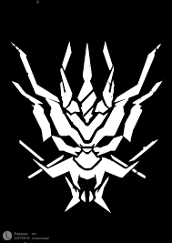
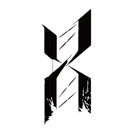
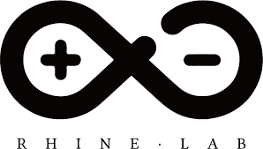
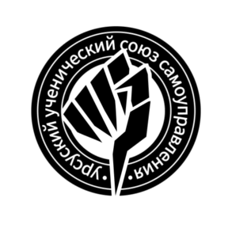
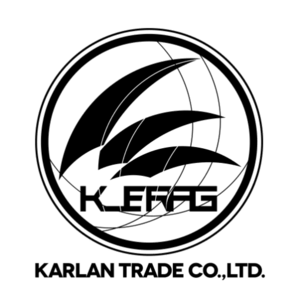

1、 擋二技能回費型：凜冬（BUFF）、推進之王（輸出）、德克薩斯（控制）、清道夫（輸出）、訊使（防禦）、香草（輸出）、芬（防禦）、夜刀（不回費
2、 擋二擊殺回費型：推進之王（輸出）
3、 擋一擊殺回費型：格拉尼（防禦）、紅豆（輸出）、翎羽（輸出）
4、 擋零技能回費型：桃金孃（治療）
1、擋一劍聖：炎客（自療）、赫拉格（自療）、斯卡蒂（單體爆發）、芙蘭卡（單體爆發）、纏丸、玫蘭莎
2、擋一拳師：獵蜂（單體爆發）、因陀羅（防禦）
3、擋一法傷：星極（防禦）、慕斯（連擊）
4、擋二遠衛：銀灰（決戰）、月見夜、拉普蘭德（功能）、霜葉
5、擋二群攻：泡普卡、幽靈鯊（功能）、暴行、艾斯黛爾
6、擋二爆發型：陳（連擊）
7、支援型：詩懷雅、杜賓、Castle-3
1、物理防禦：星熊（輸出）、蛇屠箱、可頌（位移）、米格魯、黑角
2、法術抗性：角峰
3、奶盾：塞雷亞（法術易傷）、臨光、斑點、古米、卡緹
4、魔盾：雷蛇（技力回復）、堅雷（群攻）
5、特殊：火神（自療）
1、單體奶：閃靈（物理防禦）、華法琳（加攻）、蘇蘇洛、嘉維爾、芙蓉
2、群體奶：夜鶯（法抗、法術易傷）、微風（淨化）、白面鴞（技力回復）、調香師
3、偽群奶：末藥、赫墨
4、特殊：錫蘭（大範圍、淨化）、安塞爾（大範圍）、Lancet-2（不占部署）
1、單體慢速：艾雅法拉(決戰)、阿米婭、夜魔（醫療）、夜煙、史都華德、杜林
2、群法：天火（控制）、遠山、炎熔、12f
3、特殊：伊芙利特、格雷伊（控制）
1、單體高速：能天使（連擊）、紅雲、白金（攻擊範圍）、藍毒（混傷）、流星、傑西卡、克洛斯(連擊)、安德切爾、巡林者
2、近狙（單體低速高攻）：送葬人（穿甲）、黑（穿甲）、普羅旺斯
3、群狙：空爆、隕星（削弱）、白雪（混傷）
4、特殊：守林人（攻擊範圍）
1、召喚系：麥哲倫（無阻擋）、梅爾（有阻擋）、深海色
2、減速系：安潔莉娜（AOE輸出）、真理、地靈、梓蘭
3、輔助系：初雪（削弱）、空（回血、加攻）
4、特殊系：格勞克斯（打無人機）
1、推位移：食鐵獸、阿消
2、拉位移：崖心、暗索
3、快速復活：紅、礫
4、特殊：獅蠍、伊桑
羅德島是混合了感染者成員在內，擁有完整獨立武裝力量與礦石感染研究與檢疫手段的組織，成為了近期活躍在處理感染者暴亂問題最前線的小型組織。
龍門警備力量與安全部門的結合體，集中，無情，但是有效。尤其是面對天災帶來的感染者泛濫問題上。
古老森嚴的等級制度與穩定的選拔考核確保著它能夠保持著穩定的同時接納新鮮血液，保護著這艘孤舟穿行在諸國之間不受外敵與天災的侵害。
整合運動是一個完全由感染者組成的恐怖組織，他們極端排外，仇視曾經壓迫過他們的正常人社會。他們宣稱“感染者應對自己的身份感到驕傲，積極去獲取並使用屬於自己的力量”。
雖然感染者註定會走向末路，但是整合運動的成員們卻希望以自己的方式在社會上得到公正，甚至超越既有的社會。
據說是一個地下物流組織，和其他物流不同的是，它可以運送一切商品包括龍門的獅子，並且會絕對準時和安全抵達。
“企鵝物流準時率達到99.9%以上，貨損率不到0.1%，均已超過同行標準。” 雖然廣告上是這樣說的，可是也據說還有沒有抵達的商品——他們和委託人一起都消失了，這是一場賭博吧，畢竟在現在戒嚴的狀態下也僅有這家公司的物流服務還在運營了。
企鵝物流作為一家獨立的私人信使公司成立於****。因業務發展需要於****轉移至龍門並開始以龍門作為核心業務區域。作為龍門最可靠的快遞業者，我們同時也是專業的貨物保全/保密運輸/私人高級運輸服務的提供者，擁有滿足不同層次客戶需求的多元化產品體系。我們將用最可靠的信息流與私人武裝保證你的委託快速精準地運輸至受理範圍內的任問地點。
萊茵生命實驗室是一家位於哥倫比亞，致力於拓展生命科學、化學製造、生物引用等技術領域的公司，也是哥倫比亞重點扶持的科技團體。萊茵生命內部存在著諸多未公開項目，涉及面廣泛。據媒體消息，過去一段時間內，萊茵生命的某些項目秘密擴大了招募規模，更有軍方資源已經介入其中的傳聞。相關人士猜測，這些機密項目，或與針對生物體的源石實驗有關。
烏薩斯學生自治團成員共有五人，均為切城當地某中學就讀的學生。在切爾諾伯格城陷落，整合運動對整個城市展開大清洗期間，凜冬聚集了部分生還學生，以“學生自治團”的名義進行自衛、援助和逃亡行動。在經歷了一系列冒險和紛爭後，這支學生自治團投奔了羅德島。
謝拉格三族議會屬國營對外貿易組織，組織首領為現三族議會一方家族、希瓦艾什家族現任族長——恩希歐迪斯·希瓦艾什，即羅德島幹員銀灰，主要從事謝拉格非傳統貿易，即商品、原料出口和現代工業進口貿易。軍工產業、軍事訓練等產業也有所涉及，和雷神工業、企鵝物流等有所交集，羅德島同盟。
深海獵人是一支以對抗侵犯泰拉世界阿戈爾地區的巨大恐怖生物為目的而存在的隸屬於阿戈爾諸國的軍事團體，創始人之一為歌蕾蒂婭，成員規模未知，組織結構未知，運作狀態未知。
該組織存在歷史極長，且樹敵眾多，主要在多數泰拉世界種族都聞所未聞的阿戈爾地區活動，且目前已知的成員皆為阿戈爾與伊比利亞出身。 組織宗旨是以暴力手段對抗名為“海嗣”的怪物及其追隨者深海教會對阿戈爾地區，乃至對泰拉世界陸地的侵襲。 羅德島元老凱爾希對該組織及其歷史有相當程度的了解，深海獵人成員斯卡蒂因此才和羅德島達成僱傭關係成為幹員。 過去，羅德島通過未知手段接收了神秘的深海獵人成員幽靈鯊成為幹員，她也許會成為解開阿戈爾之謎的鑰匙。
回到首頁